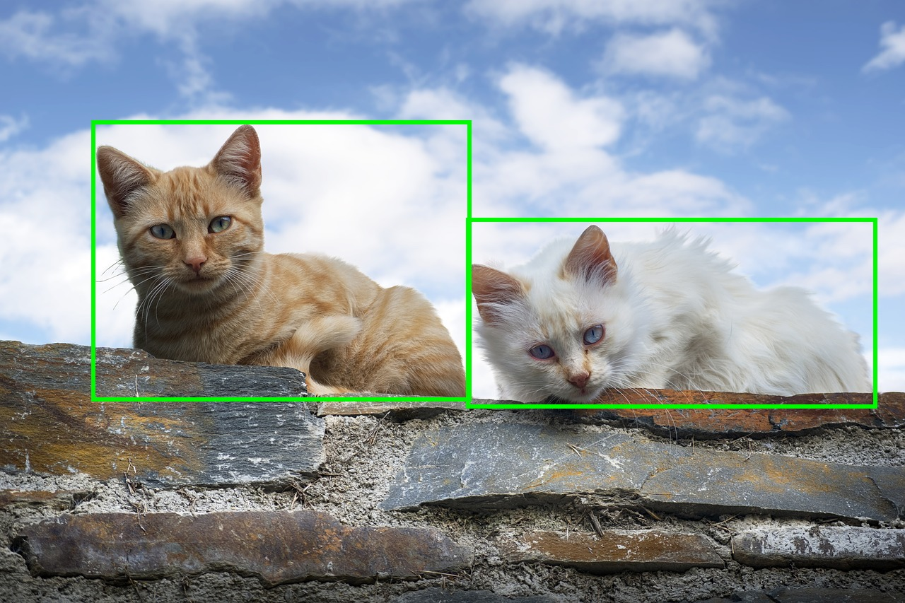
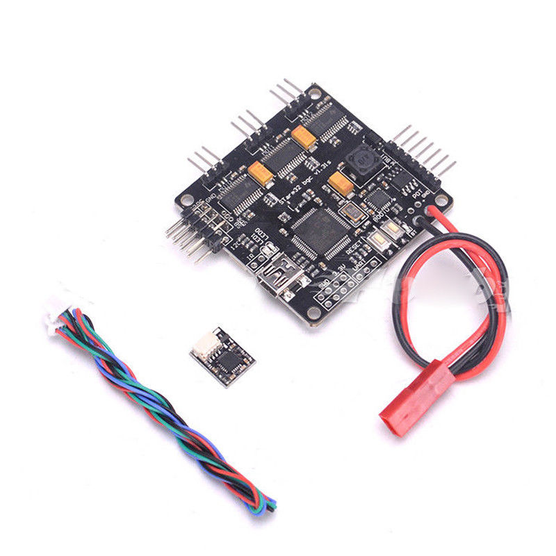
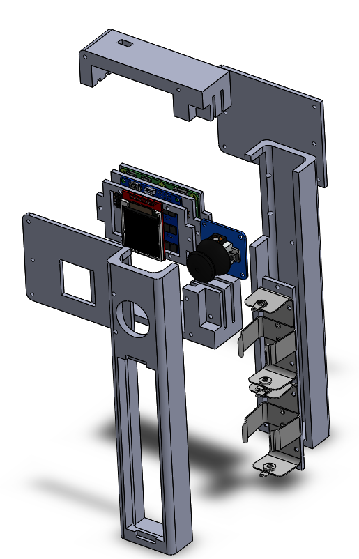

Smart Gimbal
*IN PROGRESS*
A render of the smart gimbal without the camera mount attached on the third axis

The goal of this project is to make an innovative prototype for a product that could potentially make life much easier for videographers. Standard commercial gimbals are capable of camera stabilization in axes of a user's choice and can also perform simple tasks such as panning. My partner and I hoped to create a gimbal equipt with all these capabilities along with object detection and tracking.
For example, our gimbal would automate the task of tracking a cat walking along a sidewalk. Instead of a user having to constantly try to keep the cat in the middle of the screen, they would be able to walk relatively casually alongside the cat (or not at all) as the gimbal would autonomously center the cat in the middle of the shot.
Storm32 BGC

At first, we considered trying to program the stabilization algorithm from scratch, but we soon abandoned this idea. It would be much easier to use an existing gimbal controller that would handle all of the stabilization automatically. All we would have to do was send signals to the gimbal controller to adjust the default position of the motors in order to track desired objects. The Storm 32 BGC controller was cheap and had loads of documentation online for us to eat up. Sending signals to the Storm 32 BGC can be easily done via servo pulse signals to the RC pins on the board.
Raspberry Pi Zero
We decided to use the Raspberry Pi Zero for the controls since it was compact and could also run Python/C++ and OpenCV. With all of the GPIO pins on the Zero, it would be difficult to run out of inputs and outputs. The Zero is also very compact, which was a constraint for creating a sleek physical design for our prototype.
Motors
The Storm32 BGC acts not only as a stabilizer but also as a motor controller (i.e. it replaces a motor controller and does extra). The Storm32 was designed for brushless DC motors, so we had to find BLDC motors that matched the electrical specifications.
LCD and Analog Thumb Joystick
We needed some way for the user to be able to choose an object they would want the gimbal to focus on. In order to accomplish this, we decided we wanted an LCD display that would give the user a list of objects to focus on, and a joystick that could be used to then select from the list.
Power
We decided to use two batteries in series which would provide 12V. 7V to power the Storm BGC and 5V for the Pi. We plan to use the GPIO pins on the Pi to provide power to the LCD and thumb joystick.

I worked on the mechanical design of the prototype. The main constraints I kept in mind as I sketched and then CAD'd my design were manufacturability, compactness, and structural integrity. I also tried to make my design aesthetically appealing for a prototype. I decided to house the LCD, Storm32 BGC, and Raspberry Pi all in a compartment sticking out of the side of a handle. This specific prototype was created for a right hand user, which is why I placed the thumb joystick to the right of the LCD display, allowing a right-handed user to easily use the device with one hand. I decided to house the batteries within the handle. The handle is completely hollow to allow for powerlines and 3 axis motor wires to travel into the LCD compartment.
All the components are either to be 3D printed or lasercutted. I made sure to design all the 3D printed parts such that there were no large overhangs at over 45 degrees to the printing surface.